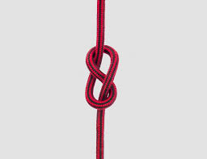
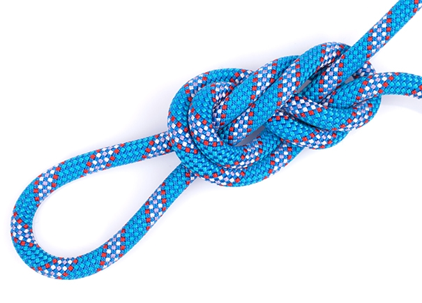

Nudos de escalada
Los nudos de escalada necesitan estar bien hechos ya que están diseñados para soportar todo tipo de peso y tensión

El nudo 8 es uno de los nudos más importantes y conocidos en el mundo de la escalada.

El nudo bowline es una alternativa al nudo 8 que es más fácil de hacer y menos complicado de quitar.